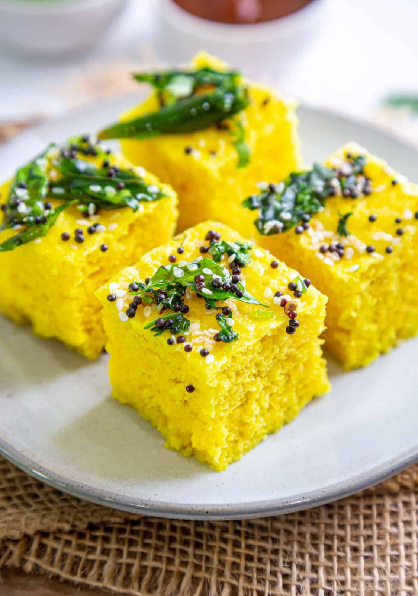

Dhokla

Ingredients:
- 1 cup gram flour (besan)
- 2 tbsp semolina (rava/suji) – optional for extra softness
- 1 tsp ginger-green chili paste
- 1 tbsp lemon juice
- 1 tbsp sugar
- 1/2 tsp turmeric powder
- Salt to taste
- 1 cup water
- 1 tsp fruit salt (Eno) or 1/2 tsp baking soda
- 2 tbsp oil
- 1 tsp mustard seeds
- 1 tsp sesame seeds
- 2 green chilies, slit
- 8–10 curry leaves
- 1/4 cup water
- 1 tsp sugar
- Freshly grated coconut (optional)
- Chopped coriander leaves
Instructions:
- Wash the raw rice thoroughly until the water runs clear.Soak the rice in enough water for 4–6 hours or
overnight.
- In a mixing bowl, combine gram flour, semolina (if using), turmeric powder, salt, sugar, and
ginger-green chili paste.
- Add water gradually and whisk to make a smooth, lump-free batter.
- Add lemon juice and mix well. Keep the batter slightly thick but flowing.
- Just before steaming, add Eno or baking soda. Mix gently but quickly. The batter will become airy and
light.
- Grease a steaming plate or tray with oil.
- Pour the batter into the greased plate and spread it evenly.
- Heat water in a steamer or large pot and place a stand in the center. Once the water starts boiling,
place the plate with the batter on the stand.
- Cover with a lid and steam for 15–20 minutes on medium heat. Check with a toothpick – it should come out
clean when inserted into the dhokla.
- Once steamed, let it cool slightly and cut into squares or diamonds.
- Heat oil in a small pan. Add mustard seeds and let them splutter.
- Add sesame seeds, green chilies, and curry leaves. Sauté for a few seconds.
- Add 1/4 cup water and sugar, and stir until the sugar dissolves. Turn off the heat.
- Pour the prepared tempering evenly over the dhokla pieces, ensuring it seeps in.
- Garnish with grated coconut and chopped coriander leaves.
Video instructions